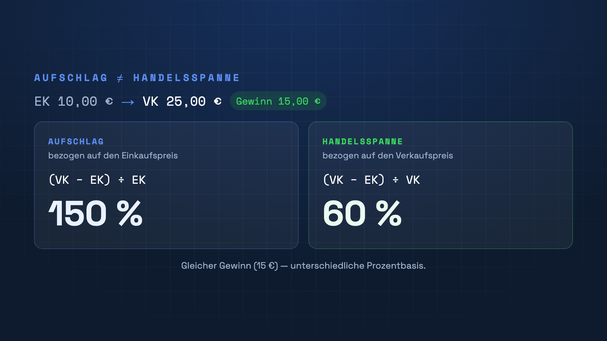

„Ich habe 50 % Aufschlag“ – aber ist das die Marge? Aufschlag und Handelsspanne sind nicht dasselbe. Wer sie verwechselt, verkalkuliert sich. Hier ist der Unterschied in einer Minute.

Der entscheidende Unterschied
Beide messen deinen Gewinn – aber auf unterschiedlicher Basis. Der Aufschlag (Markup) bezieht den Gewinn auf den Einkaufspreis, die Handelsspanne (Marge) auf den Verkaufspreis. Derselbe Euro-Gewinn ergibt so zwei sehr verschiedene Prozentzahlen.
Die Formeln
Aufschlag = (Verkaufspreis − Einkaufspreis) ÷ Einkaufspreis
Handelsspanne = (Verkaufspreis − Einkaufspreis) ÷ Verkaufspreis
Beispiel: EK 10 €, VK 25 €, Gewinn 15 €. Aufschlag = 15 ÷ 10 = 150 %. Handelsspanne = 15 ÷ 25 = 60 %.
Warum das wichtig ist
Wenn du mit „50 % Marge" kalkulierst, aber eigentlich 50 % Aufschlag meinst, ist dein Verkaufspreis zu niedrig. Für die Rentabilität zählt die Handelsspanne – sie sagt dir, wie viel von jedem verkauften Euro als Rohgewinn bleibt.
Marge im Blick behalten
In der erweiterten Kalkulation von PriceCalc Pro siehst du Netto-, Brutto- und Margenwerte pro Produkt – so kalkulierst du nie unter Wert.
PriceCalc Pro ansehen →